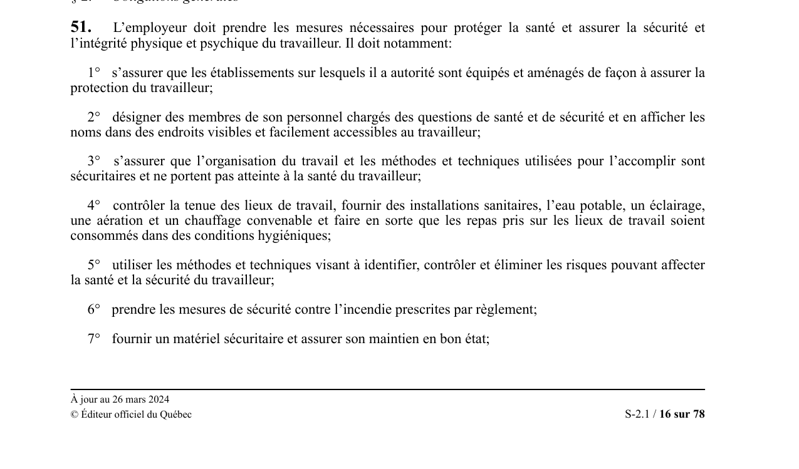

art-51-LSST
Texte officiel sur LegisQuébec · PDF du vault

Toucher l'image pour l'agrandirPage 16 sur 78 du PDF LSST, à jour 26 mars 2024.
L'employeur doit prendre les mesures nécessaires pour protéger la santé et assurer la sécurité et l'intégrité physique et psychique du travailleur. L'article énumère 16 obligations (15 à l'origine, mises à jour par la LMRSST) couvrant la conception sécuritaire, l'information, la formation, les équipements, la supervision et l'élimination des dangers à la source.
Article au coeur des obligations de l'employeur en SST. Il liste tout ce qu'il doit faire concrètement : sécuriser les lieux, fournir l'équipement, former, informer, prévenir et corriger. Ajouts LMRSST 2021 : risques psychosociaux (par. 14) et violence (par. 16).
Critères d'application
Principales obligations
- S'assurer que les établissements sont équipés et aménagés pour assurer la protection du travailleur.
- Désigner des membres du personnel chargés de la SST.
- S'assurer que l'organisation du travail et les méthodes sont sécuritaires.
- Contrôler la tenue des lieux ; fournir installations sanitaires, eau potable, éclairage, aération et chauffage convenables.
- Identifier, contrôler et éliminer les risques (méthodes et techniques).
- Mesures contre l'incendie.
- Fournir gratuitement les EPI individuels et collectifs.
- Informer, former, entraîner et superviser adéquatement.
- Afficher les renseignements sur les risques, premiers secours et premiers soins.
- Permettre la passation d'examens de santé exigés.
- Communiquer la liste des matières dangereuses au comité SST, à l'association accréditée, au directeur de santé publique et à la CNESST.
- Collaborer avec le comité, le représentant à la prévention et les inspecteurs.
- Mettre à disposition équipements, locaux et personnel cléricaux nécessaires au comité.
- (ajout LMRSST) Évaluer, prévenir et contrôler les risques psychosociaux liés au travail.
- Mesures de protection contre la violence physique ou psychologique (incluant conjugale, familiale, sexuelle).
Portée
Tout employeur assujetti à la LSST. Article fondamental cité dans la majorité des constats d'infraction (notamment par. 5 et 9).
Application terrain
En droit, l'article 51 est l'article-pivot des poursuites pénales LSST. Par. 5 est invoqué quand l'employeur omet d'utiliser les méthodes pour identifier, contrôler ou éliminer un risque connu. Par. 16 (depuis 2021) crée l'articulation avec la LNT (art. 81.18 à 81.20) sur le harcèlement et la violence, y compris conjugale, familiale ou à caractère sexuel.
Articles connexes (même loi)
- art-2-LSST : objet de la loi (définitions)
- art-49-LSST : obligations générales du travailleur (obligations du travailleur)
- art. 51 par. 4 (aération et chauffage)
- art. 51 par. 11 (EPI gratuits)
- art-58-LSST : programme prévention propre établissement (programme de prévention)
- art-62-LSST : rapport événement grave Commission (avis d'accident)
- art-68-LSST : formation du comité SST (programme de santé)
Jurisprudence marquante
R. c. Sault Ste-Marie (Ville), 1978, Cour suprême du Canada
Arrêt fondateur en matière d'infractions de responsabilité stricte applicables
Pages qui pointent ici (31)
- 🎯 Démarrage rapide, conseiller SST Droit du travail
- 🎯 Démarrage rapide, direction et RH Droit du travail
- 🏢 Bienvenue, gestionnaire Ergonomie
- 🚀 Démarrage rapide - Conseiller SST, ergonome Ergonomie
- 🚀 Démarrage rapide - Direction, RH Ergonomie
- Aménagement des horaires Ergonomie
- art-116-RSST, qualité air milieu travail Ergonomie
- art-117-RSST Ergonomie
- art-118-RSST, ventilation milieu travail Ergonomie
- art-119-RSST Ergonomie
- art-121-RSST Ergonomie
- art-122-RSST Ergonomie
- art-123-RSST Ergonomie
- art-124-RSST Ergonomie
- art-166-RSST Ergonomie
- art-167-RSST Ergonomie
- art-51-11-LSST Ergonomie
- art-51-4-LSST Ergonomie
- Conception ergonomique du poste Ergonomie
- Droits et recours du travailleur Droit du travail
- Évaluation et surveillance ergonomique Ergonomie
- Infractions et sanctions SST Droit du travail
- Loi sur les normes du travail (LNT) Droit du travail
- LSST Ergonomie
- LSST, droits et obligations Droit du travail
- Mécanismes de prévention LMRSST en mine Droit du travail
- Obligations de l'employeur Droit du travail
- Politique d'hydratation et de chaleur Ergonomie
- Programme de prévention TMS Ergonomie
- Programme manutention Ergonomie
- Régime CNESST Droit du travail